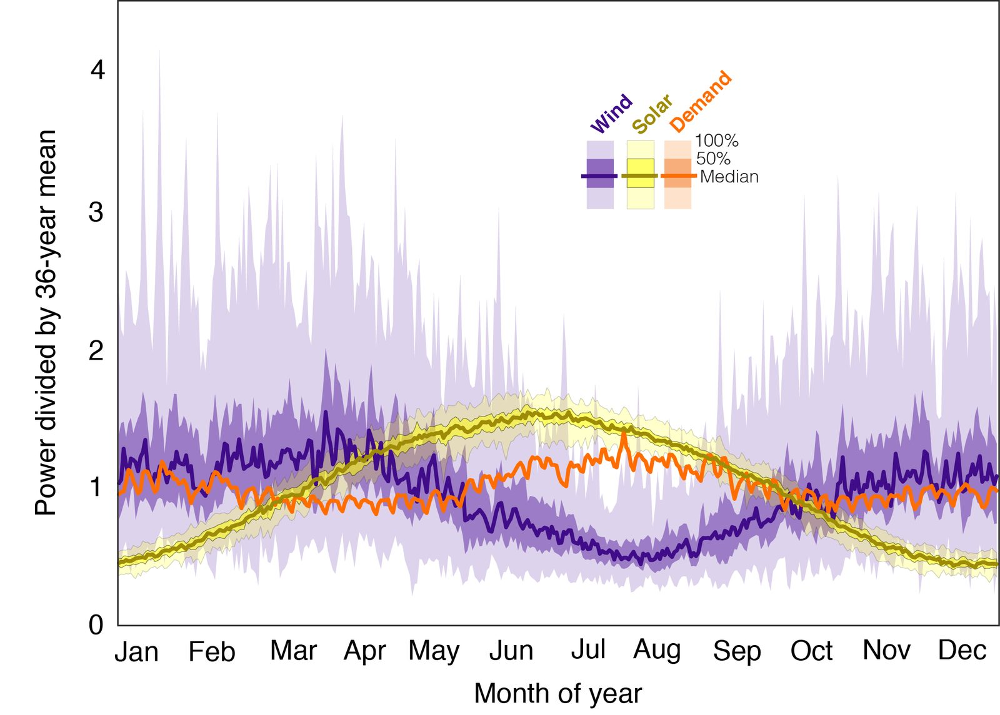
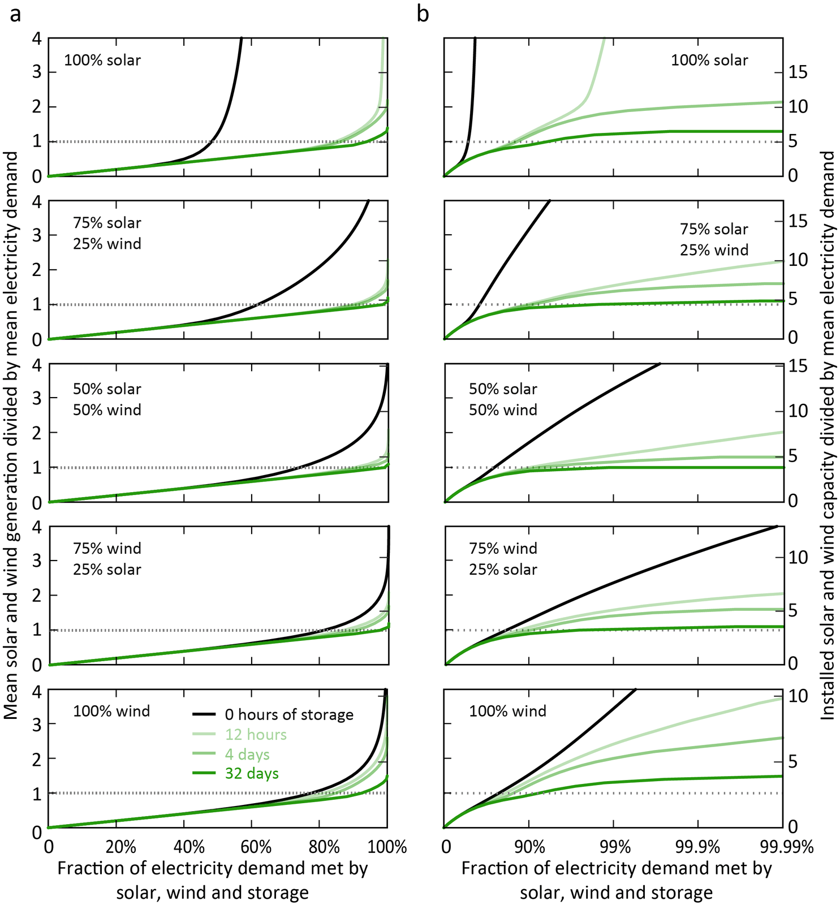

We recently published a paper that does a very simple analysis of meeting electricity demand using solar and wind generation only, in addition to some form of energy storage. We looked at the relationships between fraction of electricity demand satisfied and the amounts of wind, solar, and electricity storage capacity deployed.
M.R. Shaner, S.J. Davis, N.S. Lewis and K. Caldeira. Geophysical constraints on the reliability of solar and wind power in the United States. Energy & Environmental Science (2018). (Please email for a copy if you can’t get through the paywall.)
Our main conclusion is that geophysically-forced variability in wind and solar generation means that the amount of electricity demand satisfied using wind and solar resources is fairly linear up to about 80% of annually averaged electricity demand, but that beyond this level of penetration the amount of added wind and solar generation capacity or the amount of electricity storage needed would rise sharply.
Obviously, people have addressed this problem with more complete models. Notable examples are the NREL Renewable Electricity Futures Study and another is the NOAA study (McDonald, Clack et al., 2016). These studies have concluded that it would be possible to eliminate about 80% of emissions from the U.S. electric sector using grid-inter-connected wind and solar power. In contrast, other studies (e.g., Jacobson et al, 2015) have concluded that far deeper penetration of intermittent renewables was feasible.
What is the purpose of writing a paper that uses a toy model to analyze a highly simplified system?

The purpose of our paper is to look at fundamental constraints that geophysics places on delivery of energy from intermittent renewable sources. For some specified amount of demand and specified amount of wind and solar capacity, the gap between energy generation and electricity demand can be calculated. This gap would need to be made up by some combination of (1) other forms of dispatchable power such as natural gas, (2) electricity storage, for example as in batteries or pumped hydro storage, or (3) reducing electricity loads or shifting them in time. This simple geophysically-based calculation makes it clear how big a gap would need to be filled.
Our simulations correspond to the situation in which there is an ideal and perfect continental scale electricity grid, so we are assuming perfect electricity transmission. We also assume that batteries are 100% efficient. We are considering a spherical cow.
Part of the issue with the more complicated studies is that the models are black boxes, and one has to essentially trust the authors that everything is OK inside of that black box, and that all assumptions have been adequately explained. [Note that Clack et al. (2015) do describe the model and assumptions used in McDonald, Clack et al. (2016) in detail, and that the NREL study also contains substantial methodological detail.]
In contrast, because we are using a toy model, we can include the entire source code for our toy model in the Supplemental Information to our paper. And all of our input data is from publicly available sources. So you don’t have to trust us. You can look at our code and see what we did. If you don’t like our assumptions, modify the assumptions in our code and explore for yourself. (If you want the time series data that we used, please feel free to request them from me.)
Our key results are summarized in our Fig. 3:

The two columns of Fig. 3 show the same data: the left column is on linear scales; the right column has a log scale on the horizontal axis. [In a wind/solar/storage-only system, meeting 99.9% of demand is equivalent to about 8.76 hours of blackout per year, and 99.99% is equivalent to about 53 minutes of blackout per year.]
The left column of Fig. 3 shows, for various mixes of wind and solar, that the fraction of electricity demand that is met by introducing intermittent renewables at first goes up linearly — if you increase the amount of solar and/or wind power by 10%, the amount of generation goes up by about 10%, and is relatively insensitive to assumptions about electricity storage.
From the right column of Fig. 3, it can be seen that as the fraction of electricity demand satisfied by solar and/or wind exceeds about 80%, then the amount of generation and/or the amount of electricity storage required increases sharply. It should be noted that even in the cases in which 80% of electricity is supplied by intermittent renewables on the annual average, there are still times when wind and solar is providing very little power, and if blackouts are to be avoided, the gap-filling dispatchable electricity service must be sized nearly as large as the entire electricity system.
This ‘consider a spherical cow’ approach shows that satisfying nearly all electricity demand with wind and solar (and electricity storage) will be extremely difficult given the variability and intermittency in wind and solar resources.
On the other hand, if we could get enough energy storage (or its equivalent in load shifting) to satisfy several weeks of total U.S. electricity demand, then mixes of wind and solar might do a great job of meeting all U.S. electricity demand. [Look at the dark green lines in the three middle panels in the right column of Fig. 3.] This is more-or-less the solution that Jacobson et al. (2015) got for the electric sector in that work.
Our study, using very simple models and a very transparent approach, is broadly consistent with the findings of the NREL, NOAA, and Jacobson et al. (2015) studies, which were done using much more comprehensive, but less transparent, models. Our results also suggest that a main difference in conclusions between the NREL and NOAA studies and the Jacobson et al. (2015) study is that Jacobson et al. (2015) assume the availability of large amounts of energy storage, and that this is a primary factor differentiating these works. (The NOAA study showed that one could reduce emissions from the electric sector by 80% with wind and solar and without storage if sufficient back-up power was available from natural gas or some other dispatchable electricity generator.)
All of these studies share common ground. They all indicate that lots more wind and solar power could be deployed today and this would reduce greenhouse gas emissions. Controversies about how to handle the end game should not overly influence our opening moves.
There are still questions regarding whether future near-zero emission energy systems will be based on centralized dispatchable (e.g., nuclear and fossil with CCS) or distributed intermittent (e.g., wind and solar) electricity generation. Nevertheless, the climate problem is serious enough that for now we might want to consider an ‘all of the above’ strategy, and deploy as fast as we can the most economically efficient and environmentally acceptable energy generation technologies that are available today.
Where to read more
- The publication this post is about: Geophysical constraints on the reliability of solar and wind power in the United States (Shaner et al., 2018 · Energy & Environmental Science)
- Published article (doi:10.1039/C7EE03029K)
- Can wind and solar power reliably meet electricity demand?